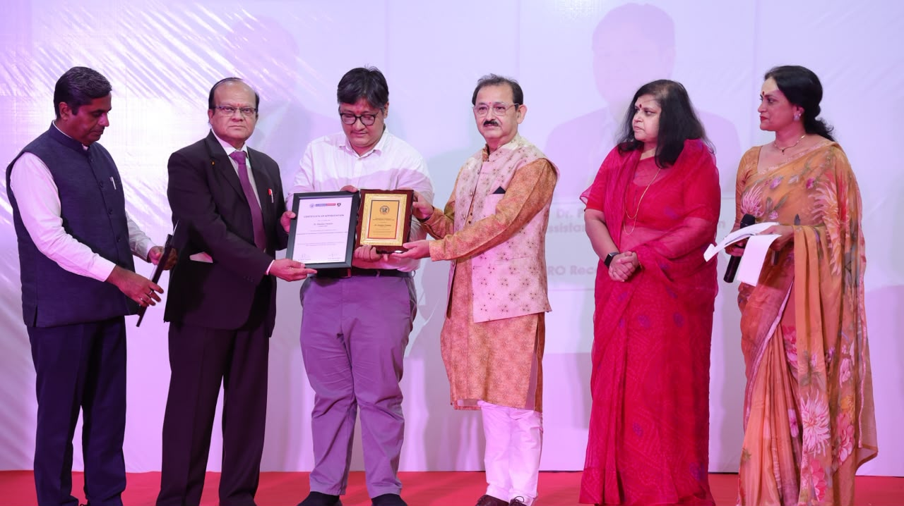
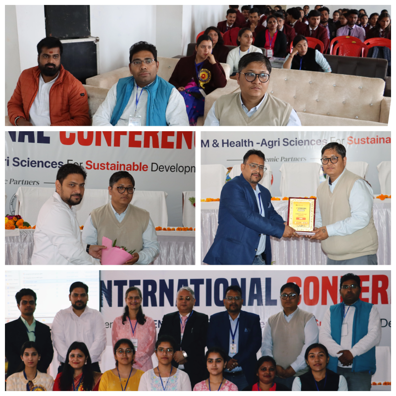

Completed a Seed Grant project awarded by K.R. Mangalam University for a two-year duration on “Development of Micro pin fin Heat sink to facilitate enhanced conversion efficiency of Photovoltaic solar cells” of ₹2.10 lakh as Principal Investigator (PI).
Academic · Researcher · Educator
Dr. Prabhakar
Bhandari
Top 2%Scientists in the World — composite C-score, 2024, 2025 and 2026
21H-index (Scopus profile as on 17 October 2026)
1,891Citations (Scopus profile as on 17 October 2026)
31Published SCIE journal publications
28Published SCOPUS/ESCI journal publications
54Conference proceedings / book chapters
3Books listed in CV
Recognition and bibliometric figures are reproduced from the CV, with Scopus counts dated 17 October 2026.
Profile
Academic profile and responsibilities
Current responsibilities
- Associate Director, Central Instrumentation Facility (CIF)
- Research Finance Officer, Research Development Cell (RDC)
- Assistant Professor (Selection Grade), Mechanical Engineering, SOET, K. R. Mangalam University
Research focus
Heat transfer engineering and fluid dynamics; renewable energy systems; electronic cooling; microchannel and micro-pin-fin heat sinks; single- and two-phase flows; ice slurry; microfluidics; biochar and its applications.
Projects & service
Research projects, administration and consultancy
Project grant
Administrative responsibilities
School Research Committee Member
University Research Committee Member
Laboratory Audit and Quality Assurance Committee member
Member of Centre of Excellence- Cyber Security
Member of Library committee
Mentors in Collaborative solutions Lab
Associate Director (Operations and Maintenance) of Central Instruments Facility
Research finance officer
NAAC Criteria 3 coordinator
Placement coordinator
Lab In charge-Workshop
Consultancy
Advisor in a US based company EST AGRX.
Consultancy work provided to Haryana Steel Mongers Pvt. Ltd., Faridabad, Haryana, India.
Professional memberships

Senior Member of International association for Carbon capture (Membership number: 202610010433)
Life member of Imperial Society of Innovative Engineers (Membership number: ISIEP242022008)
Life member of Indian Society of Heat and Mass transfer (Membership number: 1764)
Associate member of The Institution of Engineers (India) (membership number: AM3051598)

Member of Hong Kong society of Mechanical Engineers (membership number: M20211230001)

Member of International Association of Engineers (membership number: 291554).
Member of Universal Association of Mechanical and Aeronautical Engineers (SNM20220118916)
Student supervision
M.Tech - 1 Student (Atul Kumar)
Ph.D - 2 student ongoing as Co-Supervisor- Poonam Yadav, Seema
UG Students
Recognition
Awards, recognitions and appreciations
Appreciated for Contributions in university recognition in DSIR-SIRO 2026, on 19/9/2026 at K.R. Mangalam University.

Appreciated for serving as Session Chair at the 2nd International Conference on Emerging Trends in STEM & Health-Agri Sciences for Sustainable Development, held on 24–25 February 2025 at MIET Kumaon, Haldwani.

Appreciated for serving as Session Chair at the International Conference on IC Engines, Propulsion and Combustion-1.0 (2024), jointly organized by the Department of Aerospace and Mechanical Engineering, Graphic Era (Deemed to be University) and Graphic Era Hill University, Dehradun, in collaboration with Uttarakhand State Council for Science & Technology (UCOST).
Appreciated for serving as Session Co-Chair and Organizing Committee Member at the International Conference on Advanced Materials for Green Chemistry and Sustainable Environment (AMGSE-2024) organized by the School of Basic and Applied Sciences, K.R. Mangalam University.
Appreciated for serving as Session Co-Chair at the International Conference on Multidisciplinary Research & Innovations in Engineering (MRIE-2023) organized by the School of Engineering and Technology, K.R. Mangalam University.
Best Researcher award from K.R. Mangalam University for the session of 2023-24.
Best Researcher award from K.R. Mangalam University for the session of 2022-23.
Elite +Silver in NPTEL Course on Transport Phenomena of Non-Newtonian Fluids (2019)
Elite +Silver in NPTEL Course on MATLAB programming for Numerical Computation (2019)
Intellectual property
Patents and registered designs
Published an Indian patent on “method for multi-phase cooling of high-density mechanical assemblies” (202511123081 A)
Published an Indian patent on “System for adaptive thermo-fluid regulation in high-efficiency heat transfer networks” (202511123073 A)
Granted a South African Patent on “Heat exchanger system with clock wise and counter clock wise flow type concentric spiral tube” (2025/01658)
Granted a South African Patent on “A Hybrid Packed Bed Heat Regenerating Reservoir system” (2025/02407)
Published an Indian patent on “hybrid cooling in motorcyclist apparel for heat to cold transitions” (202511101944A)
Indian design patent of “Multi-purpose water bottle” granted (Application No: 367533-001)
Indian design patent of “micro pin fin heat sink” granted (Application No: 366738-001)
Education
Academic qualifications
| Qualification | Institution / details |
|---|---|
| M. Tech | Department of Mechanical Engineering, Govind Ballabh Pant University of Agriculture and Technology, Pantnagar, Uttarakhand, (2011 – 2013) , 75 % (With MHRD-GATE Scholarship) Thesis: Performance evaluation of hybrid solar water heating system using wire screen packed solar air heater |
| B. Tech | Uttarakhand Technical University, Dehradun, Uttarakhand (2007 – 2011), 69.2% |
| Higher Secondary | I.S.C. Board, Modern School Rishikesh, Rishikesh, 2007, 75 % |
| Matriculation | I.C.S.E. Board, Modern School Rishikesh, Rishikesh, 2005, 72 % |
Career
Academic experience & leadership
Assistant Professor (Selection Grade), Mechanical Engineering
School of Engineering and Technology, K. R. Mangalam University, Gurugram, Haryana.
Assistant Professor, Mechanical Engineering
K. R. Mangalam University, Gurugram, Haryana.
Associate Director, Central Instrumentation Facility (CIF)
Research facility coordination and instrumentation/characterization support.
Research Finance Officer, Research Development Cell (RDC)
Research finance and research-development support.
Research
Research interests
Heat transfer Engineering and Fluid dynamics
Heat transfer Engineering and Fluid dynamics
Renewable Energy
solar air heater, solar water heater, solar still, etc.
Electronic cooling
microchannel heat sink, single phase fluid flow, nano fluid, computational fluid dynamics, experimental heat transfer, battery thermal management system.
Fluid Flow
Ice slurry Flow, two phase fluid flow, microfluidics etc.
Bio char and its application
Bio char and its application
Technical skills & instrumentation
| Category | Details as listed in CV |
|---|---|
| Handling of Instruments TGA/DSC FTIR LCR Meter UV Spectrometer Electronic Muffle Furnaces | Software Expertise Designing software: Solid works, Workbench Analysis software: ANSYS (Fluent module), MATLAB Post processing software: Tecplot 360, Sigmaplot Programming language: C++ |
Scholarly output
Journal publications
Publication records are reproduced from the supplied CV; Impact Factor and CiteScore values are from the supplied publication workbook. A tilde marks an approximate CiteScore. Values marked “Not available” or “Not listed in spreadsheet” were not provided in the workbook. Entry tint follows Impact Factor (<1, 1–<3, 3–<5, ≥5); the top border follows CiteScore (<2, 2–<5, 5–<10, ≥10). Gray indicates a missing value. DOI and source URLs are linked when present in the CV.
A. Negi, L. Ranakoti, V. Kumar, R.P. Verma, P. Bhandari, R. Siva, S. Sharma, R. H. Ullah, A. Smerat, K. Ramaswamy. “Response surface methodology-based optimization of Al2O3-CuO hybrid nanofluid synthesis parameters for enhanced stability in thermal energy storage applications. Energy Exploration & Exploitation”. 2026;0(0). {SCIE & SCOPUS} (I.F.-3.0) https://doi.org/10.1177/01445987261491066
Impact Factor: Not listed in spreadsheetCiteScore: Not listed in spreadsheet
A.K. Kanaujiya, D.K. Rao, S. Kaushik, N. Singh, P. Bhandari, B. Kumar, S. Sharma, A. Smerat, M. M. Helal, K. Ramaswamy. “Energy-efficient thermal performance of walls and windows for four building orientations in four Indian climatic zones: A verified dynamic analysis of insulation, glazing type and glazing area”. Energy Exploration & Exploitation. 2026;0(0). {SCIE & SCOPUS} (I.F.-3.0) https://doi.org/10.1177/01445987261492429
Impact Factor: Not listed in spreadsheetCiteScore: Not listed in spreadsheet
A. Negi, L. Ranakoti, R. P. Verma, P. Bhandari. “Enhancing solar still productivity through fins, solar collectors, and wick modifications: A comprehensive review. ”, Archives of Thermodynamics, Vol. 47, No. 3, pp. XX. {ESCI & SCOPUS} (I.F.-0.8). 10.24425/ather.2025.156593
Impact Factor: Not listed in spreadsheetCiteScore: Not listed in spreadsheet
A. Negi, L. Ranakoti, R. P. Verma, P. Bhandari, S. Sharma, K. Sharma & M. Abbas. “Do phase change materials (PCMs) contribute to the enhanced performance and functionality of solar stills? A comprehensive analysis”, Energy Efficiency 19, 57 (2026). {SCIE & SCOPUS} (I.F.-3.4) https://doi.org/10.1007/s12053-026-10458-x
Impact Factor: 3.5CiteScore: 6.7
V.S. Bisht, D. B. Singh, P. Bhandari, P. Kumar, R. K. Tipu, S. Singh, A.S. Bist “Investigation of Heat Transfer and Flow Characteristics in Solar Air Heaters with Spherical-Turbulator Using Machine Learning models”, Archives of Thermodynamics, Vol. 47, No. 2, pp.99-118. {ESCI & SCOPUS} (I.F.-0.8). 10.24425/ather.2025.156593
Impact Factor: 0.8CiteScore: ~1.9
J. Bohra, V.S. Bisht, P. Bhandari, K. Pandey, S. Singh, A.S. Bist, L. Ranakoti, S. Kaushik, K.K. Sharma, (2026), “Exergy-Based Performance Assessment of a Solar Air Heater Equipped with Zig-Zag Structured Baffles”, Archives of Thermodynamics, Vol. 47, No. 2, pp.151-157. {ESCI & SCOPUS} (I.F.-0.8). 10.24425/ather.2025.156593
Impact Factor: 0.8CiteScore: ~1.9
S. Kaushik, S.L. Sharma, S.R. Kumar, A.Srivastav, P. Bhandari, M. Kumar, A. Kumar, S. Kumar, A. Priyadarshee, D.K. Rao, V. Sati, N.K. Sain, V.R. Nair, A.R. Paul, N.K. Yadav, P. Rawat, (2026). “Thermal Performance Analysis of Hybrid Nanofluids in a Rectangular Multichannel Microchannel Heat Sink with External Cylindrical Inserts in a Cylindrical Enclosure,” Energy Technology, vol. 14, no. 4, {SCIE & SCOPUS} (I.F.-3.6) doi: 10.1002/ente.202502227.
Impact Factor: 3.6CiteScore: ~5.3
S. Pandey, A. Negi, J.S. Mehta, R.P. Verma, D.B. Singh, L. Ranakoti, A. Srivastava, P. Bhandari, S. Kaushik, N. Kanojia and G. Gurudeep (2026). “Ergonomic Workspace Design for Wheelchair Users”. International Journal of Vehicle Structures & Systems, Vol. 18, No. 2, pp. 329–334. {SCOPUS} https://doi.org/10.4273/ijvss.18.2.27
Impact Factor: Not availableCiteScore: ~2.1
V.S. Bisht, D.B. Singh, P. Kumar, S. Jain, P. Bhandari, M.A. Mumtaz, Mohammod Hafizur Rahman (2026). “Innovative Spherical Turbulator Configurations for Enhanced Solar Air Heater Performance: A Numerical and Analytical Study”. Energy, Vol. 342, pp. 139601. {SCIE & SCOPUS} (I.F.-9.4) https://doi.org/10.1016/j.energy.2025.139601
Impact Factor: 9.4CiteScore: ~13.9
Manish, D. Kumar, A. Punia, L. Ranakoti, B. Gangil, P. Bhandari, S. Sharma, E.E.S. Massoud (2025). “Chemical modifications of acid-treated pine needle fillers reinforced epoxy nanocomposites for enhanced thermomechanical properties using a response surface methodology approach: fabrication and optimization”. International Journal of Chemical reactor and Engineering, Vol. 23, No. 2, pp. 245-259. {SCIE & SCOPUS} (I.F.-1.2) https://doi.org/10.1515/ijcre-2025-0010.
Impact Factor: 1.2CiteScore: ~2.6
M.S. Rawat, S. Kaloni, R. K. Tipu, P. Bhandari (2025). “Sustainability and Economic Evaluation of Recycled Aggregate Geopolymer Concrete Using Fly Ash and Slag”. Journal of Material Cycles and Waste Management, vol. 27, pp. 4389-4403. {SCIE & SCOPUS} (I.F.-3.0) https://doi.org/10.1007/s10163-025-02373-7
Impact Factor: 3CiteScore: ~5.8
B. Gangil, L. Ranakoti, P. Bhandari, A. Bisht, D. Biswas, S. Verma (2025). “Comparative Study of Gravity Die Casting and Centrifugal Methods for Waste/Nanoparticle-Filled Polymer Composites: Physico-mechanical and Wear Analysis”. Materialwissenschaft Und Werkstofftechnik (Material Science and Engineering Technology), vol. 56, No. 8, pp. 1096-1104. {SCIE & SCOPUS} (I.F.-1.1). https://doi.org/10.1002/mawe.70018
Impact Factor: 1.1CiteScore: ~2.4
A. Negi, L. Ranakoti, S. K. Mishra, R. P. Verma, V Kumar, A. Mandal, P. Bhandari, A. Uniyal, P. Zainith (2025). “Exploring potential of Paraffin Wax: A Phase Change Material for Improving yield of Solar Still”. Archives of Thermodynamics, Vol. 46, No. 3, pp. 229-236. {ESCI & SCOPUS} (I.F.-0.8). 10.24425/ather.2025.156593
Impact Factor: 0.8CiteScore: ~1.9
A. Kumar, S. Kumar, V. K. Verma, S. Singh, R. Shukla, A. Jain, A. S. Bist, P. Vishnoi, V. Kumar, P. Bhandari (2025). “Experimental Analysis of Ethanol-Diesel Blends Stabilized with Jatropha Methyl Ester: Engine Performance and Emission Characteristics”. Archives of Thermodynamics, Vol. 46, No. 3, pp. 105-112. {ESCI & SCOPUS} (I.F.-0.8). 10.24425/ather.2025.156582
Impact Factor: 0.8CiteScore: ~1.9
P. Bhandari, N. Yadav, D. Padalia, L. Ranakoti, T. Alam, M. I. H. Siddiqui, I. Ashraf (2025). “Thermo-physical Properties evaluation of Commercially available phase change material and Engine oil”. Case Studies in Thermal Engineering, pp. 106357. {SCIE & SCOPUS} (I.F.-6.4) https://doi.org/10.1016/j.csite.2025.106357
Impact Factor: 6.4CiteScore: ~11.5
K.S. Rawat, P. Bhandari, V.S. Bisht, B. Nagappan, L. Ranakoti, K. Alagu, D. N. Thatoi, S. Sharma, V. N. Rao (2025). “Unlocking sustainable cooling: a numerical analysis of ice slurry flow in 180° U-bends-impacts of bend radius/pipe radius ratios and pressure drops on system performance”. International Journal of Chemical reactor and Engineering, Vol. 23, No. 2, pp. 245-259. {SCIE & SCOPUS} (I.F.-1.2) https://doi.org/10.1515/ijcre-2024-0233.
Impact Factor: 1.2CiteScore: ~2.6
G. Chauhan, V. S. Bisht, P. Bhandari, S. Singh, R. Shukla, L. Ranakoti A. S. Bist (2025). “Numerical Investigation of Heat Transfer Enhancement in a Double Pipe Heat Exchanger Using Tangential Perforated Circular Ring Turbulators”. Archives of Thermodynamics, Vol. 46, No. 1, pp. 177-184. {ESCI & SCOPUS} (I.F.-0.8). https://doi.org/10.24425/ather.2025.154191
Impact Factor: 0.8CiteScore: ~1.9
A. Negi, L. Ranakoti, P. Bhandari, S. Aggarwal, R. P. Verma, A. S. Bist, A. Uniyal, S. Kaushik, N. Kanojia, A. Srivastav (2025). “Yield augmentation by integrating jute wick in a single slope solar still: an experimental study”. Archives of Thermodynamics, Vol. 46, No. 1, pp. 169-176. {ESCI & SCOPUS} (I.F.-0.8). https://doi.org/10.24425/ather.2025.154190
Impact Factor: 0.8CiteScore: ~1.9
A. Negi, L. Ranakoti, R. P. Verma, V. Kumar, P. Bhandari, R. Khargotra, T. Singh, (2025). “Enhancing solar still productivity with organic phase change materials: A literature review”, Energy Conversion and Management: X, Vol. 26, pp. 100984. {ESCI & SCOPUS} (I.F.-7.1). https://doi.org/10.1016/j.ecmx.2025.100984
Impact Factor: 7.1CiteScore: ~11.2
A. Negi, L. Ranakoti, V. Singh, P. Bhandari, M. Wang, G. Fekete, T. Singh, (2025). “A hybrid CRITIC-MAIRCA framework for optimal phase change material selection in solar distillation systems”, International Journal of Thermofluids, Vol. 27, pp. 101167. {SCOPUS} https://doi.org/10.1016/j.ijft.2025.101167
Impact Factor: Not availableCiteScore: ~6.5
A. Ghildyal, V. S. Bisht, P. Bhandari, S. Thapliyal, S. Kaushik, L. Ranakoti, R. S. Bangari, A. Srivastav, N. Kanojia, A. R. Paul (2024). “A comparative numerical evaluation of solar air heater performance having W-contoured, taper-contoured and reverse taper-contoured turbulators”, Archives of Thermodynamics, Vol. 45, No. 4, pp. 189-196. {ESCI & SCOPUS} (I.F.-0.8). 10.24425/ather.2024.152008
Impact Factor: 0.8CiteScore: ~1.9
S. Kaushik, J. S. Mehta, S. Singh, V. S. Mahar, A. Srivastav, N. Kanoji, R. Kumar, S. Vashisth, S. S. Karki, A. Kumar, P. Bhandari, D. B. Singh (2024). “Comparative Study of Thermal Criteria and Fluid-Flow Criteria in Micro and Mini Channel Design Constrains with or without Insert Made of Aluminum Material”. International Journal of Integrated Engineering 16 (6), p. 31-45. {ESCI & SCOPUS}(I.F.-0.4) https://penerbit.uthm.edu.my/ojs/index.php/ijie/article/view/16474
Impact Factor: 0.4CiteScore: ~1.5
L. Ranakoti, Y. Joshi, P. Bhandari, B. Gangil, S. Kumar, T. Singh (2024). “Tasar silk fiber waste reinforced polylactic acid composite: Physical, mechanical, and sliding wear characterization”. Results in Engineering. Vol. 24, p. 102865. {ESCI & SCOPUS}(I.F.-6.0) https://doi.org/10.1016/j.rineng.2024.102865
Impact Factor: 6CiteScore: ~8.9
S. Kumar, V.S. Bisht, P. Bhandari, L. Ranakoti, A. Negi, A.S. Bist, D. Padalia (2024). “Computational Analysis of Modified Solar Air Heater having Combination of Ribs and Protrusion in S-shaped Configuration”, International Journal on Interactive Design and Manufacturing (IJIDeM). {ESCI & SCOPUS}(I.F.-2.1) https://doi.org/10.1007/s12008-024-01972-2
Impact Factor: 2.1CiteScore: ~4.5
D. Padalia; U. Kumar; P. Bhandari; J. Dalal; L. Ranakoti; T. Singh (2024). “Tuning the structural, optical, and dielectric properties of europium doped barium titanate ceramics”, Journal of Materials Science: Materials in Electronics. Vol. 35, 1375. {SCIE & SCOPUS}(I.F.-2.8)https://doi.org/10.1007/s10854-024-12984-9
Impact Factor: 2.8CiteScore: ~5.7
A. Maheswari, Y.K. Prajapati, P. Bhandari, R. Upadhyaya (2024). “Experimental analysis of double layer microchannel heat sink with distinct fin configurations in upper and lower layers”, International Journal of Thermal Sciences. Vol. 203, pp. 109177. {SCIE & SCOPUS}(I.F.-4.9https://doi.org/10.1016/j.ijthermalsci.2024.109177
Impact Factor: 4.9CiteScore: ~10.5
L. Ranakoti, A. Negi, A. Negi, B. Gangil, P. Bhandari, R. Singh, S. Sharma, S. P. Dwivedi, P. S. Bains, E. Makki & M. Abbas (2024). “Physicomechanical, microstructural morphological, and thermal characterizations of jute and coconut husk–based natural fibers reinforced hempcrete hurd composites for building and construction applications”, Biomass Conversion and Biorefinery. {SCIE & SCOPUS} (I.F.-3.5) https://doi.org/10.1007/s13399-024-05682-3
Impact Factor: 3.5CiteScore: ~7.8
P. Bhandari, V. Sharma, V. S. Bisht, S. Kaushik, M. K. Lila, N. Kanojia, A. Srivastava, B. Kumar, A. R. Paul (2024). “Numerical Investigation of Increasing-Decreasing Stepped - Micro Pin Fin Heat Sink Having Various Arrangements”, Archives of Thermodynamics, Vol. 45, No. 4, pp. 37-44. {ESCI & SCOPUS}(I.F.-0.8). https://doi.org/10.24425/ather.2024.151995
Impact Factor: 0.8CiteScore: ~1.9
P. Bhandari, B. Vyas, D. Padalia, L. Ranakoti, Y. K. Prajapati, R. S. Bangri (2024). “Comparative thermo-hydraulic analysis of periodic stepped open micro pin-fin heat sink”, Archives of Thermodynamics, Vol. 45, No. 3, pp. 99-105. {ESCI & SCOPUS} (I.F.-0.8). https://doi.org/10.24425/ather.2024.151228
Impact Factor: 0.8CiteScore: ~1.9
S. Haldia, V. S. Bisht, P. Bhandari, L. Ranakoti, A. Negi, (2024). “Numerical assessment of solar air heater performance having broken arc and broken S-shaped ribs as roughness”, Archives of Thermodynamics, Vol. 45, No. 1, pp. 23-31. {ESCI & SCOPUS} (I.F.-0.8). https://doi.org/10.24425/ather.2024.150435
Impact Factor: 0.8CiteScore: ~1.9
A. Negi, L. Ranakoti, P. Bhandari, R. Khargotra, T. Singh (2024). “Thermo-Physical Characteristics and Storage Material Compatibility in Nano-Enhanced Phase Change Materials for Solar Distillation Applications: A critical Assessment”, Solar Energy Materials and Solar Cells, Vol. 271, pp. 112870. {SCIE & SCOPUS} (I.F.-6.3) https://doi.org/10.1016/j.solmat.2024.112870
Impact Factor: 6.3CiteScore: ~11.6
K. Rawat, P. Bhandari, V. S. Bisht, T. Alam, M. I. H. Siddiqui, (2024). “Numerical Investigation of Adiabatic Ice Slurry Flow through a Horizontal T–Shaped Pipe”. Fluid Dynamics. Vol. 59, pp. 344-362. {SCIE & SCOPUS} (I.F.-1.0) https://doi.org/10.1134/S0015462823602309
Impact Factor: 1CiteScore: ~2.3
S. Kumar, B. Gangil, L. Ranakoti, P. Bhandari, D. Gupta, M. K. Gupta, (2023). “An Investigation on Mechanical and Sliding Wear properties of Titanium Oxide-Basalt fiber-based hybrid PLA Composites using Grey-Taguchi Approach”, Journal of The Institution of Engineers (India): Series D. {SCOPUS} https://doi.org/10.1007/s40033-023-00587-3
Impact Factor: Not availableCiteScore: ~2.2
A. Negi, R.P. Verma, A. Saxena, L. Ranakoti, P. Bhandari, T. Singh, G.N. Tiwari, (2023). “Design and Performance of Black Painted Khes Wick Modified Solar Still: An Experimental and 5E Analysis”, International Journal of Thermofluids, Vol. 20, pp. 100491. {SCOPUS} https://doi.org/10.1016/j.ijft.2023.100491
Impact Factor: Not availableCiteScore: ~6.5
P. Bhandari, K.S. Rawat, Y. K. Prajapati, D. Padalia, L. Ranakoti, T. Singh, (2023). “A review on design alteration in microchannel heat sink for augmented thermohydraulic performance”, Ain Shams Engineering Journal. Vol. 15(2), pp.102417. {SCIE & SCOPUS} (I.F.-6.0)https://doi.org/10.1016/j.asej.2023.102417
Impact Factor: 6CiteScore: ~10.9
V. Singh, N. Pant, R. K. Sharma, D. Padalia, P. S. Rawat, R. Goswami, P. Singh, A. Kumar, P. Bhandari, Alam T., A. Mohamed, (2023). “Adsorption Studies of Pb (II) and Cd (II) Heavy Metal Ions from Aqueous Solutions Using Magnetic Biochar Composite Material”, Separations, Vol. 10, pp. 389. {SCIE & SCOPUS} (I.F.-2.5) https://www.mdpi.com/2297-8739/10/7/389
Impact Factor: 2.5CiteScore: ~5.6
U. Kumar, D. Padalia, P. Kumar, P. Bhandari, (2023). “Estimation of lattice strain and Structural study of BaTiO3/PS polymer composite using X-ray peak profile analysis”, Journal of Nanoparticle Research, Vol. 25, pp. 124. {SCIE & SCOPUS} (I.F.-2.1) https://link.springer.com/article/10.1007/s11051-023-05779-2
Impact Factor: 2.1CiteScore: ~4.2
J. Singh, V.S. Bisht, P. Bhandari, K. Kumar, J. Singh, T. Alam, S. Dixit, S. Singh, R. Khusnutdinov (2023). “Computational parametric investigation of solar air heater with dimple roughness in S-shaped pattern”, International Journal on Interactive Design and Manufacturing (IJIDeM), Vol. 18, 2969-2979. {ESCI & SCOPUS}(I.F.-2.1) https://doi.org/10.1007/s12008-023-01392-8.
Impact Factor: 2.1CiteScore: ~4.5
T. Singh, A. Ahewar, V. Singh, L. Ranakoti, P. Bhandari, L. Lendavi, (2023). “Performance optimization of lignocellulosic fiber-reinforced brake friction composite materials using an integrated CRITIC-CODAS-based decision-making approach”, Sustainability, Vol. 15(11), pp. 8880. {SSCI, SCIE & SCOPUS} (I.F.-3.3) https://doi.org/10.3390/su15118880
Impact Factor: 3.3CiteScore: ~7.6
P. Bhandari, K. Rawat, Y. K. Prajapati, D. Padalia, L. Ranakoti, T. Singh, (2023). “Design modifications in micro pin fin configuration of microchannel heat sink for single phase liquid flow: A review”, Journal of Energy Storage, Vol. 66, pp. 107548. {SCIE & SCOPUS} (I.F.-8.9)https://doi.org/10.1016/j.est.2023.107548
Impact Factor: 8.9CiteScore: ~13.2
A. Ghildyal, V. S. Bisht, K. S. Rawat and P. Bhandari, (2023). “Effect of D-shaped, Reverse D-shaped and U-shaped turbulators in Solar Air Heater on thermo hydraulic performance”, Archives of Thermodynamics, Vol. 44, No. 2, pp. 3-20. {ESCI & SCOPUS} (I.F.-0.8) DOI: 10.24425/ather.2023.146556
Impact Factor: 0.8CiteScore: ~1.9
R. K. Thapa, V. S. Bisht, K. Rawat, P. Bhandari (2023). “Computational analysis of Automobile radiator roughened with rib roughness”, Journal of heat and mass transfer research, 9, pp. 209-218. {SCOPUS} (I.F.-0.8). DOI: : 10.22075/jhmtr.2023.27617.1382
Impact Factor: Not availableCiteScore: ~1.5
P. Bhandari, D. Padalia, L. Ranakoti, R. Khargotra, K. András, T. Singh (2023). “Thermo-hydraulic investigation of open micro prism pin fin heat sink having varying prism sides”, Alexandria Engineering Journal, 69, pp. 457-468. {SCIE & SCOPUS} (I.F.-6.2) https://doi.org/10.1016/j.aej.2023.02.016
Impact Factor: 6.2CiteScore: ~11.8
A. S. Bisht, V. S. Bisht, P. Bhandari, K. S. Rawat, T. Alam, P Blecich (2023). “The Use of a Vortex Generator for the Efficient Cooling of Lithium-Ion Batteries in Hybrid Electric Vehicles”, Processes, 11, pp. 500. {SCIE & SCOPUS} (I.F.-2.8) DOI: https://doi.org/10.3390/pr11020500
Impact Factor: 2.8CiteScore: ~5.5
L. Ranakoti, B. Gangil, P. Bhandari, T. Singh, S. Sharma, J. Singh, S. Singh (2023). “Promising role of Polylactic acid as an ingenious biomaterial in scaffolds, drug delivery, tissue engineering, and medical implants: Research developments, and prospective applications”, Molecules, 28(2), pp. 485. {SCIE & SCOPUS} (I.F.-4.2) https://doi.org/10.3390/molecules28020485
Impact Factor: 4.2CiteScore: ~7.7
A. Uniyal, Y. K. Prajapati, L. Ranakoti, P. Bhandari, T. Singh, B. Gangil, S. Sharma, V. V. Upadhyay, S. M. Eldin, (2022). “Recent advancements in Evacuated tube solar water heater: A critical review integration of Phase change materials and nano-fluids with ETCs”, Energies, 15(23), pp. 8999. {SCIE & SCOPUS} (I.F.-3.0) https://doi.org/10.3390/en15238999
Impact Factor: 3CiteScore: ~8.2
U. Kumar, D. Padalia, P. Bhandari, P. Kumar, L. Ranakoti, T. Singh and L. Lendvai, (2022). “Fabrication of Europium-Doped Barium Titanate/Polystyrene Polymer Nanocomposites Using Ultrasonication-Assisted Method: Structural and Optical Properties”, Polymers, 14(21), pp. 4664 {SCIE & SCOPUS} (I.F.-4.7) https://doi.org/10.3390/polym14214664
Impact Factor: 4.7CiteScore: ~9.1
P. Bhandari, (2022). “Numerical investigations on the effect of multi-dimensional stepness in Open micro pin fin heat sink using single phase liquid fluid flow”, International Communications in Heat and Mass Transfer, 138, pp. 106392. {SCIE & SCOPUS} (I.F.-6.4)https://doi.org/10.1016/j.icheatmasstransfer.2022.106392
Impact Factor: 6.4CiteScore: ~11.4
A. Singh, R. Srivastava, V. S. Bisht, and P. Bhandari, (2022). “Characterization of SiC particle reinforced copper matrix composite with Copper wire structure”, Composites Theory and Practice, Vol. 22, No. 3, pp. 178-183. {ESCI & SCOPUS} (I.F.-0.5)
Impact Factor: 0.5CiteScore: ~1.8
P. Bhandari, J, Singh, K. Kumar and L. Ranakoti, (2022). “Active techniques in microchannel heat sink for miniaturization problem in electronic industry: A review”, Acta innovations, Vol. 45, pp. 45-54. {SCOPUS}https://doi.org/10.32933/ActaInnovations.45.4
Impact Factor: Not availableCiteScore: ~1.2
K.S. Rawat, P. Bhandari and V.S. Bisht, (2022), “Thermodynamic Analysis of Combined ORC-VCR system with Recuperator and Reheater.” Acta innovations, Vol. 44, pp. 34-44. {SCOPUS}https://doi.org/10.32933/ActaInnovations.44.3
Impact Factor: Not availableCiteScore: ~1.2
R. K. Thapa, V. S. Bisht, P. Bhandari and K. Rawat, (2022). “Numerical study of car radiator using dimple roughness and nanofluid”. Archives of Thermodynamics, Vol. 43, No. 3, pp. 125-140. {ESCI & SCOPUS} (I.F.-0.8) DOI: 10.24425/ather.2022.143175
Impact Factor: 0.8CiteScore: ~1.9
P. Bhandari, and Y. K. Prajapati, (2022). “Influences of tip clearance on flow and heat transfer characteristics of open type micro pin fin heat sink.” International Journal of Thermal Sciences, Vol. 179, pp. 107714. {SCIE & SCOPUS}(I.F.-4.9) https://doi.org/10.1016/j.ijthermalsci.2022.107714
Impact Factor: 4.9CiteScore: ~10.5
P. Bhandari, Y. K. Prajapati, and A. Uniyal, (2022), “Influence of three dimensionality effects on thermal hydraulic performance for stepped micro pin fin heat sink.” Meccanica, Vol. 58, 2113-2129. {SCI/SCIE & SCOPUS}(I.F.-1.9) https://doi.org/10.1007/s11012-022-01534-4
Impact Factor: 1.9CiteScore: ~4.6
P. Bhandari, and Y. K. Prajapati, (2021), “Fluid flow and heat transfer behaviour in distinct array of stepped micro pin fin heat sink.” Journal of Enhanced heat transfer, Vol. 28, No. 4, pp. 31-61. {SCIE & SCOPUS}(I.F.-1.5) DOI: 10.1615/JEnhHeatTransf.2021037008
Impact Factor: 1.5CiteScore: ~2.8
A. Kumar, P. Bhandari, K. S. Rawat, (2021), “Numerical Simulation of Solar Air Heater using Paraffin Wax-Aluminum Compound as Phase Changing Material.” Aptisi Transactions on Technopreneurship (ATT), Vol. 3(2), pp. 164-70. {SCOPUS} https://doi.org/10.34306/att.v3i2.199
Impact Factor: Not availableCiteScore: ~1.1
B. P. Singh, V. S. Bisht, P. Bhandari, K. S. Rawat, (2021), “Thermo-fluidic modelling of a heat exchanger tube with conical shaped insert having protrusion and dimple roughness.” Aptisi Transactions on Technopreneurship (ATT), Vol. 3(2), pp. 127-143. {SCOPUS} https://doi.org/10.34306/att.v3i2.200
Impact Factor: Not availableCiteScore: ~1.1
P. Bhandari, and Y. K. Prajapati, (2020), “Thermal performance of open microchannel heat sink with variable pin fin height.” International Journal of Thermal Sciences, Vol. 159, pp. 106609. { SCIE & SCOPUS}(I.F.-4.9) https://doi.org/10.1016/j.ijthermalsci.2020.106609
Impact Factor: 4.9CiteScore: ~10.5
Y. K. Prajapati, and P. Bhandari, (2017), “Flow boiling instabilities in microchannels and their promising solutions – A review.” Experimental Thermal and Fluid Science, Vol. 88, pp. 576-593. { SCIE & SCOPUS}(I.F.-2.8) https://doi.org/10.1016/j.expthermflusci.2017.07.014
Impact Factor: 2.8CiteScore: ~6.7
Conference & book chapters
SCOPUS-indexed book chapters / conference proceedings
S. K. Vishwakarma, V. Rathi, P. Gupta, V. Mehra, P. Bhandari and K. Adilakshmi, "Smart Farming Enabled by Artificial Intelligence to Enhance Crop Productivity and Nutritional Quality," 2026 International Conference on Emerging Trends in Information, Communication & Systems (ICETICS), Bhopal, India, 2026, pp. 1-6, doi: 10.1109/ICETICS69505.2026.11651182.
D. Sengupta, D. S. Niharika, R. M, B. Singh, A. Joshi and P. Bhandari, "Intelligent Network Traffic Classification Using Deep Learning for Cloud Security," 2026 2nd International Conference on Big Data & Machine Learning (ICBDML), Bhopal, India, 2026, pp. 1-6, doi: 10.1109/ICBDML68582.2026.11544268.
B. S. Balasundram, Y. Ramaswamy, B. Singh, J. Bhatt, P. Bhandari and S. George, "Secure Software-Defined Networking (SDN) Using ML-Driven Threat Prediction," 2026 2nd International Conference on Big Data & Machine Learning (ICBDML), Bhopal, India, 2026, pp. 1-6, doi: 10.1109/ICBDML68582.2026.11545136.
M. V. Nagesh, S. Kumar G, P. Bhandari, S. M, A. S. Reddy and C. Sinhgadiya, "Enhancing EHR Sharing and Health Data Analytics with AFGH Algorithm in a Secure Cloud Framework," 2025 IEEE Madhya Pradesh Section Conference (MPCON), Jabalpur, India, 2025, pp. 537-542, doi: 10.1109/MPCON66082.2025.11256670.
P. Bhandari, L. Ranakoti, B. Prasad, A. Uniyal, and A. Negi, ‘Numerical study of three stepped open micro pin fin heat sink using single phase liquid fluid flow’, in AIP Conference Proceedings, Dehradun, India, 2026, vol. 3365, p. 030038. https://doi.org/10.1063/5.0317400
P. Bhandari, L. Ranakoti, S. Ram, B. Prasad, A. Asrani, A. Mandal, A. Uniyal, A, Negi, (2026), ‘Influence of different substrate material on thermal performance for open stepped micro pin fin heat sink’, in AIP Conference Proceedings, Dehradun, India, 2026, vol. 3365, p. 030021. https://doi.org/10.1063/5.0317399
P. Bhandari, L. Ranakoti, D. Padalia, B. Prasad, A. Asrani, and A. Negi, ‘Comparative numerical investigation of four stepped micropin fin heat sink in electronic cooling’, in AIP Conference Proceedings, Dehradun, India, 2026, vol. 3365, p. 020016. https://doi.org/10.1063/5.0317398
L. Ranakoti, A, Negi, P. Bhandari, V. Kumar, B. Prasad, A. Asrani, A. Uniyal, (2026), ‘Mechanical characterization of basalt fiber reinforced poly lactic acid bio composite’, in AIP Conference Proceedings, Dehradun, India, 2026, vol. 3365, p. 020014. https://doi.org/10.1063/5.0317418
L. Ranakoti, A, Negi, P. Bhandari, V. Kumar, B. Prasad, A. Asrani, A. Uniyal, (2026), ‘Effect of walnut filler on mechanical properties of kevlar/sisal hybrid composite’, in AIP Conference Proceedings, Dehradun, India, 2026, vol. 3365, p. 020011. https://doi.org/10.1063/5.0317417
L. Ranakoti, A. Negi, P. Bhandari, V. Kumar, S. Joshi, A. Uniyal (2026). Selection of Optimal Biofuel for Improved Performance Using Multi-criteria Decision-Making (MCDM) Technique. In: Saraswat, V.K., Pandey, P.K., Sahu, S., Tirkey, J.V., Ji, G. (eds) Advancement in Combustion Technologies Towards Net Zero Carbon Emission. Lecture Notes in Mechanical Engineering. Springer, Singapore. https://doi.org/10.1007/978-981-95-2239-2_47
S. Dobhal, V. S. Bisht, P. Bhandari, A. Negi, L. Ranakoti, S. Joshi, A. Uniyal, (2026). Design and Exergetic Analysis of Combined Wavy Groove and Delta Wing Vortex Generator for Thermal Management in a Solar Air Heater. In: Saraswat, V.K., Pandey, P.K., Sahu, S., Tirkey, J.V., Ji, G. (eds) Advancement in Combustion Technologies Towards Net Zero Carbon Emission. ICICEPC 2024. Lecture Notes in Mechanical Engineering. Springer, Singapore. https://doi.org/10.1007/978-981-95-2239-2_50.
L. Roy, P. Bhandari, S. Yadav, A. Akula, A. S. Reddy and A. Lathigara, "Protecting Against Adversarial Attacks in Graph Neural Networks: Vulnerability Assessment and Parallel Defense Strategies," 2025 World Skills Conference on Universal Data Analytics and Sciences (WorldSUAS), Indore, India, 2025, pp. 1-6, doi: 10.1109/WorldSUAS66815.2025.11199215
G. Sethi, G. Singh Negi, P. Bhandari, R. R. Padmanathan, (2025), Quantitative characterization of nano particles: An in-depth study using transmission electron microscopy (TEM). AIP Conference Proceedings, Vol. 3157 (1), pp. 120054. https://doi.org/10.1063/5.0263546
P. P. Singh, D. Singh, P. Bhandari, S. Polepakam, 2025. Specific heat and enthalpy of nanomaterials: Analyzing the influence of size and shape with differential scanning calorimetry (DSC). AIP Conference Proceedings, Vol. 3157 (1), pp. 120058. https://doi.org/10.1063/5.0263530
S. Dixit, R. Prasad, P. Bhandari, G. Ramesh, 2025. Circular economy and materials recovery: Addressing waste minimization in remanufacturing. AIP Conference Proceedings, Vol. 3157 (1), pp. 110009. https://doi.org/10.1063/5.0270998
N. I. Vatin, S. Prakash, P. Bhandari, B. R. Sadda, A. V. Natarajan, 2025. Optimizing process technologies for scrap transformation in remanufacturing: A green approach. AIP Conference Proceedings, Vol. 3157 (1), pp. 110021. https://doi.org/10.1063/5.0262868
S. Ahuja, M. S. Bisht, P. Bhandari, P. Shirisha, S. Polepaka, 2025. Optoelectronic properties of smart materials under laser testing: A laser testing investigation. AIP Conference Proceedings, Vol. 3157 (1), pp. 120050. https://doi.org/10.1063/5.0263208
B. Singh, B. Rawat, P. Bhandari, P. Haimdavi, K. B. Yerraganti, 2025. Reducing fossil-carbon energy footprints in advanced manufacturing: A carbon emission analysis. AIP Conference Proceedings, Vol. 3157 (1), pp. 110025. https://doi.org/10.1063/5.0263508
G. Sharma, R. Singh, P. Bhandari, L. Vijayasairam, P. C. S. Reddy, 2025. Sustainability criteria in manufacturing systems optimization: A multi-objective approach. AIP Conference Proceedings, Vol. 3157 (1), pp. 110028. https://doi.org/10.1063/5.0263415
N. Bhardwaj, N. Mishra, P. Bhandari, L. V. Reddy, P. Surekha, 2025. Enhancing joining processes: A comparative study of casting, welding, brazing, and soldering. AIP Conference Proceedings, Vol. 3157 (1), pp. 120033. https://doi.org/10.1063/5.0263501
S. Dixit, H. Dhall, P. Bhandari, M. Samineni, E. Poornima, 2025.; Magnetic testing of piezomagnetic sensor performance in structural health monitoring. AIP Conference Proceedings, Vol. 3157 (1), pp. 120042. https://doi.org/10.1063/5.0271000
M. Kumar, U. Dabral, P. Bhandari, R. R. Padmanathan, 2025. Investigating the hybridization of conventional and non-conventional machining processes. AIP Conference Proceedings, Vol. 3157 (1), pp. 120041. https://doi.org/10.1063/5.0271516
V. Mittal, J. Ballabh, P. Bhandari, E. Poornima, 2025. Bio-lubricants and sustainable materials in advanced manufacturing: An environmental impact study. AIP Conference Proceedings, Vol. 3157 (1), pp. 110006. https://doi.org/10.1063/5.0263681
A. K. Singla, M. Ghalwan, P. Bhandari, A. Mohammad, G. Karuna, (2025). Quantitative assessment of nano particle shape: A comprehensive analysis with scanning electron microscopy (SEM). AIP Conference Proceedings, Vol. 3157 (1), pp. 120053. https://doi.org/10.1063/5.0263521
S. Modi, N. Mishra, P. Bhandari, K. Chandramouli, (2025). Clay-polymer nanocomposites for advanced packaging materials: A material synthesis and characterization study. AIP Conference Proceedings, Vol. 3157 (1), pp. 120021. https://doi.org/10.1063/5.0263498
S. Kumar, B. Rawat, P. Bhandari, G. Karuna, (2025). Applications and challenges of natural clays and clay minerals in oil and gas industry: A comprehensive review. AIP Conference Proceedings, Vol. 3157 (1), pp. 120014. https://doi.org/10.1063/5.0263456
V. Sharma, M. Nautiyal, P. Bhandari, L. Govardhan, D. Siri, (2025). Process planning and scheduling optimization for low fossil-carbon manufacturing. AIP Conference Proceedings, Vol. 3157 (1), pp. 110022. https://doi.org/10.1063/5.0263436
A. Dutt, N. Saini, P. Bhandari, S. R. Kura, R. R. Padmanathan, (2025); Real-time energy efficiency assessment in remanufacturing: A data-driven approach. AIP Conference Proceedings, Vol. 3157 (1), pp. 110024. https://doi.org/10.1063/5.0263411
G. Pushkarna, D. Bisht, P. Bhandari, B. Madhu, Y. L. Prasanna, (2025) Streamlining manufacturing with lean principles: A JIT, MRP, and supply chain optimization approach. AIP Conference Proceedings, Vol. 3157 (1), pp. 110026. https://doi.org/10.1063/5.0263448
H. Singh, M. Ikram, P. Bhandari & D. S. Rao, (2025). Comparative analysis of Manufacturing Processes: A Sustainability-Based Case Study. AIP Conference Proceedings, Vol. 3157(1), pp. 110010. https://doi.org/10.1063/5.0262813
A. Maheswari, Y. K. Prajapati, K. Kumar, D. Kumar & P. Bhandari, (2024). Experimental study of double layer microchannel heat sink with distinct channel configurations. Proceedings of the 27th National and 5th International ISHMT-ASTFE Heat and Mass Transfer Conference. December 14-17, 2023, IIT Patna, Patna-801106, Bihar, India.
A. Singh, P. Bhandari, A. Singh, V. M. Kumar, E. Subha, S. Y. Nigam, (2024). Enhancing Cognitive Radio Networks using AI-Driven Stackelberg Game Strategies for Proactive Susceptibility Management. International Conference on Communication, Security and Artificial Intelligence, ICCSAI 2023, 861-865. DOI: 10.1109/ICCSAI59793.2023.10421377.
E. Dmitrieva, V. Balmiki, S. Lakhanpal, G. Lavanya, P. Bhandari, (2024). AI Evolution in Industry 4.0 and Industry 5.0: An Experimental Comparative Assessment. BIO Web of Conferences, 86, 01069. https://doi.org/10.1051/bioconf/20248601069
T. Blinova, R. Kumar, L. Kansal, P. Bhandari, U. Guven, Y. L. Prasanna, (2024). Data-Intensive Traffic Management: Real-Time Insights from the Traffic Management Simulation Test. BIO Web of Conferences, 86, 01089. https://doi.org/10.1051/bioconf/20248601089
M. T. Sergeevna, R. D. Nautiyal, L. Bhalla, P. Bhandari, M. Sharma. (2024). Location-Based Services for Indoor Environments: A User Experience Test. BIO Web of Conferences, 86, 01109. https://doi.org/10.1051/bioconf/20248601109
R. Kothiyal, P. Bhandari, S. Ram, V. S. Bisht, V. Chauhan, P. K. Vishnoi, and K. S. Rawat, (2023). Sustainable Electrical Discharge Machining Process: Parametric Variations. In: S. Shah, H. Nautiyal, G. Gugliani, A. Kumar, T. Namboodri, Y. K. Singla (eds) Sustainability in Smart Manufacturing Trends, Scope, and Challenges, ISBN 9781032740713, Publisher –CRC press.
P. Bhandari, K. Kumar, L. Ranakoti, V. S. Bisht, M. K. Lila, K. Joshi, N.V.G. Raju, R. Sobti, L. Jayahari, (2023). Thermo-hydraulic investigation of two stepped micro pin fin heat sink having variable step size. E3S Web of Conferences, 430, 01177. https://doi.org/10.1051/e3sconf/202343001177
A. Ghosh, A. Kumar, U. Kumar, R. Mahadeva, V. Gupta, B. Suthar, V. Patel, S. Dixit, K. Madhavi, N.V.G. Raju, S. Lakhanpal, Y. V. Rao, P. Bhandari, (2023). Neurocognitive Mechanisms of Anti-Lingual & Accent Bias Stereotyping in Virtual Reality and the Sustainable Development of Linguistic Response. E3S Web of Conferences, 430, 01194. https://doi.org/10.1051/e3sconf/202343001194
S. Kumar, M. Vaqur, K. Kumar, J. Singh, P. Acharya, P. Bhandari, R. Subbiah, N. Kaur, D. Baloji, (2023). Optimization of Sustainable Process Parameters of Friction-Stir Welding of Aluminium Alloy by Taguchi Method. E3S Web of Conferences, 430, 01179. https://doi.org/10.1051/e3sconf/202343001179
L. Ranakoti, P. Bhandari, M. K. Gupta, K. Kumar, S. Bhatia, S. Kosaraju, J. Singh, (2023). Ceramic matrix composite reinforced with glass and walnut shell filler: Influence of mesh size on its mechanical properties. Materials Today: Proceedings, Article in press. DOI: https://doi.org/10.1016/j.matpr.2023.08.106
K. Kumar, R. Arora, J. Singh, S. Khan, L. Mishra, P. Bhandari, S. Dixit and C. Prakash, (2022). Effect of Additive on Flowability and Compressibility of Fly Ash. In: Prakash, C., Singh, S., Krolczyk, G. (eds) Advances in Functional and Smart Materials. Lecture Notes in Mechanical Engineering. Springer, Singapore. pp. 211-217. DOI: https://doi.org/10.1007/978-981-19-4147-4_22
J. Singh, M. Dotiyal, P. Bhardwaj, P. Bhandari, K. Kumar, S. Dixit and V. Verma, (2022). A Detailed Investigation of Structural and Optical Properties of CTAB-Assisted Cr2O3 Nanoparticles. In: Prakash, C., Singh, S., Krolczyk, G. (eds) Advances in Functional and Smart Materials. Lecture Notes in Mechanical Engineering. Springer, Singapore. pp. 281-290. DOI: https://doi.org/10.1007/978-981-19-4147-4_30
K. Kumar, S. Kumar, S. Kumar, J. Singh, P. Bhandari, R. Arora, K. Epifantsev, B.S. Rawat, Pressure drop measurement for fine particulate slurry using optimization process. Materials Today: Proceedings, 69, 339-343. DOI: https://doi.org/10.1016/j.matpr.2022.08.546
A. Singh, A. Anand, J. Singh, M. Singh, K. Kumar P. Bhandari, V.K. Srivastava, A. Singh, M.K. Sinha (2022), Suitability of turning and grinding steel chips to synthesize metal matrix composite via powder metallurgy route. Materials Today: Proceedings, 69, 215-219. DOI: https://doi.org/10.1016/j.matpr.2022.08.446
K. Kumar, R. Arora, K. Sharma, J. Singh, Dharmveer, P. Bhandari, N. Kamboj, R. Routela, N. Taskaeva, Investigation on silica fume for its potential utilization with respect to forecasting market size. Materials Today: Proceedings, 69, 235-239. DOI: https://doi.org/10.1016/j.matpr.2022.08.468
J. Singh, M. Dotiyal, P. Bhardwaj, K. Kumar, P. Bhandari, V. Verma (2022), Influence of anionic surfactant (SDS) on the structural properties of chromium oxide (Cr2O3) nanoparticles. Materials Today: Proceedings, 69, 193-198. DOI: https://doi.org/10.1016/j.matpr.2022.08.340
A. Semalty, V. S. Bisht, P. Bhandari, K.S. Rawat, J. Singh, K. Kumar, A.K. Dixit, (2022), Thermodynamic investigation on solar air heater having roughness as multiple broken arc and circular protrusion. Materials Today: Proceedings, 69, 181-186. DOI: https://doi.org/10.1016/j.matpr.2022.08.336
J. Bohra, V. S. Bisht, P. Bhandari, K.S. Rawat, J. Singh, K. Kumar, B. Rawat, (2022), Effect of variable blockage height ratio on performance for solar air heater roughened with 45°-shaped baffles. Materials Today: Proceedings, 69, 153-157. DOI: https://doi.org/10.1016/j.matpr.2022.08.279
P. Bhandari, Y. K. Prajapati and V. S. Bisht, (2021), Heat transfer augmentation in micro pin fin heat sink using out of plane fluid mixing. Proceedings of the 26th National and 4th International ISHMT-ASTFE Heat and Mass Transfer Conference, IIT Madras, Chennai-600036, Tamil Nadu, India. Begel House Inc. 1595-1600. DOI: 10.1615/IHMTC-2021.2400
P. Bhandari and Y. K. Prajapati, (2021), Experimental Investigation of Variable Tip Clearance in Square Pin Fin Microchannel Heat Sink. Proceedings of the 26th National and 4th International ISHMT-ASTFE Heat and Mass Transfer Conference, IIT Madras, Chennai-600036, Tamil Nadu, India. Begel House Inc. 1351-1356. DOI: 10.1615/IHMTC-2021.2040
P. Bhandari, and Y. K. Prajapati, (2021), Numerical study of fluid flow and heat transfer in stepped micro-pin–fin heat sink. In: Prabu T., Viswanathan P., Agrawal A., Banerjee J.(eds) Fluid Mechanics and Fluid Power. Lecture Notes in Mechanical Engineering. Springer, Singapore, pp. 373-381. DOI: https://doi.org/10.1007/978-981-16-0698-4_40
B. P. Singh, V. S. Bisht, P. Bhandari, (2021), Numerical Study of Heat Exchanger Having Protrusion and Dimple Roughened Conical Ring Inserts. In: Sikarwar B. S., Sundén B., Wang Q. (eds) Advances in Fluid and Thermal Engineering. Lecture Notes in Mechanical Engineering. Springer, Singapore, pp. 151-161. DOI: https://doi.org/10.1007/978-981-16-0159-0_14
P. Bhandari, and Y. K. Prajapati, (2020). Numerical Analysis of Different Arrangement of Square Pin-Fin Microchannel Heat Sink. In: Biswal B., Sarkar B., Mahanta P. (eds) Advances in Mechanical Engineering. Lecture Notes in Mechanical Engineering. Springer, Singapore, pp. 879-891. DOI: https://doi.org/10.1007/978-981-15-0124-1_79
N. Kumar, P. Singh, A. K. Redhewal, and P. Bhandari, (2015), “A Review on Nano fluids Applications for Heat Transfer in Micro-channels,” Procedia Engineering. Vol. 127, pp.1197-1202. DOI: https://doi.org/10.1016/j.proeng.2015.11.461
Books and editorial work
P. Bhandari, S. Jeet, K. Khatreja, M. Kundu (2026). “Is India in Reverse Gear in the Journey of Development? A Critical Overview of India's Progress in Key Developmental Aspects”. Under review Publisher-Bentham Science.
P. Bhandari, (2023). “Devices Utilizing Solar Energy for operation”. Lambert Academic publishing. ISBN No: 978-62-07-44865-4.
P. Bhandari, (2023). “Back to Hindu Mythology: From Engineering perspective”. Lambert Academic publishing. ISBN No: 978-620-6-78643-6.
P. Bhandari, P. Bhandari, (2023). “Mechanical devices in Veterinary”. Lambert Academic publishing. ISBN No: 978-620-6-78591-0.
Editor
Innovative Trends in Multidisciplinary Engineering
Academic engagement
Conference papers presented
P. Bhandari, (2024), “Inlet/Outlet Arrangements and Plenum Design in Microchannel Heat Sinks: A Comprehensive Review”. International Conference on IC Engines, Propulsion and Combustion-1.0 2024 jointly organized by department of Aerospace and Mechanical Engineering Graphic Era (Deemed to be University) & Graphic Era Hill University, Dehradun, 8-11 Nov, 2024.
P. Bhandari, (2024), “Influence of different substrate material on thermal performance for open stepped micro pin fin heat sink”. International Conference on Recent Trends in Material and Manufacturing Technology with Computational Technologies (ICRTMMTCT-2024) organized by Graphic Era (Deemed to be University), Dehradun, 21-22 Oct, 2024.
P. Bhandari, (2024), “Numerical Study of Three stepped open micro pin fin heat sink using single phase liquid fluid flow”. International Conference on Recent Trends in Material and Manufacturing Technology with Computational Technologies (ICRTMMTCT-2024) organized by Graphic Era (Deemed to be University), Dehradun, 21-22 Oct, 2024.
A. Ghildyal, V. S. Bisht, K. Rawat and P. Bhandari, (2022). “Influence of M shaped, Wedge shaped and Reverse Wedge shaped Turbulators in Solar Air Heater.” 3rd International conference on Emerging Developments in Engineering and Technology (ICEDET – 2022), SCE, Dehradun, 22-23 April, 2022. (Online mode)
J. Bohra, V. S. Bisht, K. Rawat and P. Bhandari, (2022). “Exergy Analysis of Solar Air Heater roughened with Z-Shaped Baffles.” 3rd International conference on Emerging Developments in Engineering and Technology (ICEDET – 2022), SCE, Dehradun, 22-23 April, 2022. (Online mode)
P. Bhandari, Y. K. Prajapati, and V. S. Bisht, (2021). “Heat transfer augmentation in micro pin fin heat sink using out of plane fluid mixing.” 26th National and 4th International ISHMT-ASTFE Heat and Mass Transfer Conference (IHMTC-2021), IIT Madras, 17-20 December 2021. (Online mode) DOI: 10.1615/IHMTC-2021.2400
P. Bhandari, and Y. K. Prajapati, (2021). “Experimental investigation of variable tip clearance in square pin fin microchannel heat sink.” 26th National and 4th International ISHMT-ASTFE Heat and Mass Transfer Conference (IHMTC-2021), IIT Madras, 17-20 December 2021. (Online mode) DOI: 10.1615/IHMTC-2021.2040
B. P. Singh, V. S. Bisht, P. Bhandari, (2020), “Numerical Study of Heat Exchanger Having Protrusion and Dimple Roughened Conical Ring Inserts.” 2nd International Conference on Future Learning aspects of Mechanical Engineering. Amity School of Engineering and Technology, Noida. (Online mode)
P. Bhandari, and Y. K. Prajapati, (2018). “Numerical Analysis of Different Arrangement of Square Pin Fin in Microchannel Heat Sink.” International Conference on Recent Innovations and Developments in Mechanical Engineering, NIT Meghalaya.
P. Bhandari, L. Varshney, and V. S. Bisht, (2018), “Numerical analysis of Hybrid Solar Water Heating System Using Wire Screen Packed Solar Air Heater,” 1st International Conference on New Frontiers in Engineering, Science & Technology, Delhi Technological University, New Delhi.
P. Bhandari, and Y. K. Prajapati, (2017). “Improved Model for Predicting Bubble Growth during Flow Boiling,” 24th National and 2nd International ISHMT-ASTFE Heat and Mass Transfer Conference, BITS-Pilani, Hyderabad Campus.
N. Kumar, P. Singh, A. K. Redhewal, and P. Bhandari, (2015), “A Review on Nano fluids Applications for Heat Transfer in Micro-channels,” International conference on Computational Heat and Mass Transfer, NIT Warangal.
L. Varshney, P. Bhandari, and V. S. Bisht, (2014), “Performance evaluation of hybrid solar water heating system using wire screen packed solar air heater,” International Conference on Emerging Trends in Mechanical & Electrical Engg, Rustamji Institute of Technology Tekanpur, Gwalior.
L. Varshney, and P. Bhandari, (2013), “Parametric study of hybrid solar water heating system using wire screen packed solar air heater,” National Seminar on Technological Interventions for Sustainable Hill Development, College of Technology, GBPUA&T, Pantnagar.
Invited sessions / FDP sessions delivered
Delivered an offline session on 11th July 2026 in Faculty Developed Program on “Role of Artificial Intelligence (AI) in Higher Education: A Multidisciplinary Perspective” at HIMT, Greater Noida, Uttar Pradesh
Delivered an offline session on “Thinking Like a Researcher: Integrating Research Mindset, Statistics, and Data Analysis” on 22nd June 2026 in Faculty Developed Program on “AI Integration in Research” at K.R. Mangalam University, Gurugram, Haryana.
Delivered an online session on “AI-powered Methodology Support: Tools for Research Design and Data Planning” on 17th December 2025 in Faculty Developed Program on “Research Methods and AI-Enhanced Tools for Publishing in Quality Journals”
Workshops, training and FDPs attended
“Summer faculty research fellow Programme-2026” at IIT Delhi from 13/05/2026 to 13/07/2026.
“Learning Science in Action: Evidence-Based Practices for Teaching Excellence” oraganized by Zista Education 3E4I from 8th June-12th June 2026.
“AI for Industry 4.0” organized by Computer and Science Engineering department, National Institute of Technical Teachers Training & Research, Chandigarh from 4th – 8th August 20, 2025.
National Symposium on “Decoding Net Zero: Assessing Industrial Needs & Discussing ESG with Green Credit Innovations” from 30-31st May, 2025.
“6Th User Awareness workshop on fabrication & characterization facility for Nanotechnology” organized by IIT Delhi from 4th- 5th March 2023.
“Advanced Characterization Techniques in Condensed Matter” under “Synergistic Training Program Utilizing the Scientific and Technological Infrastructure (STUTI)” organized by Birla Institute of Technology and Science, Pilani, Pilani Campus in collaboration with Amity University, Noida from 17th - 23rd January 2023.
“Modern Trends in Manufacturing and Thermal Science (MTMTS-2022)”, organized by Department of Mechanical Engineering, National Institute of Technology Delhi, from April 05-10, 2022.
“Recent Applications of CFD in Civil and Mechanical engineering”, organized by Department of civil and Mechanical Engineering, NIT Meghalaya, from December 06-10, 2021.
“Computational and Experimental Techniques in Heat Transfer and Fluid Flows”, organized by Department of Mechanical Engineering, NIT Uttarakhand, from March 01-05, 2021.
“Fluid Dynamics, Heat Transfer and Applications”, organized by Department of Mathematics, NIT Uttarakhand, from January 18-29, 2021.
Workshop on “ANSYS CFD”, at NIT, Uttarakhand on 25th - 26th March, 2017.
“Visiting Researcher Program”, at IIT Kanpur, working with Dr. Arvind Kumar, Dept. of Mechanical Engineering, from 15/05/2015 to 22/07/2015.
“Visiting Researcher Program”, at IIT Kanpur, working with Dr. P. K. Panigrahi, Dept. of Mechanical Engineering from 15/05/2014 to 16/07/2014.
Workshop on “Communication Skills”, at College of Technology, Pantnagar on 12th- 13th March, 2013.
Training on “Overall Mechanical Works in Dam” at Alaknanda Hydro Power Company Limited, Srinagar, from 01/06/2010 to 12/07/2010.
Training under various departments in Hindusthan National Glass & Industries Ltd, Rishikesh, from 03/07/2009 to 06/08/2009.
Faculty Development program on Convective heat transfer (12 weeks), Transport phenomena of Non-Newtonian Fluids (12 weeks), MATLAB programming for Numerical Computation (8 Weeks) and Two-phase flow with phase change in Conventional and miniature channels (4 weeks) through NPTEL Online Certification in 2019.
Refresher course on Computational Fluid Dynamics through NPTEL Online Certification from July - October 2018.
Faculty Development program on RAC Product Design and Biology for Engineers and other Non-biologists through NPTEL-AICTE from August - September 2018.
Conferences, workshops and events organised
Acted as an organizing committee members in two days international conference on Pharma and Allied Sciences in the age of AI: Innovations and IPR Strategies (PASAI – 2026) sponsored by Department of Scientific and Industrial Research (DSIR), Anusandhan National Research Foundation (ANRF) and Haryana State Council for Science & Technology (HSCST) on 27th – 28th April 2026.
Organized and acted as a resource person in one day workshop on “Future of Security glasses” in collaboration with All India Glass Manufacturers Federations (AIGMF) on 27th March 2026.
Organized technical event in Central Instrumentation Facility for students of Under Graduates program of Delhi University Colleges- Gargi College and Shivaji College
Moderator of technical session “Indian Knowledge system for achieving environment sustainability” at 2nd International Conference on “Advanced Materials for Green Chemistry and Sustainable Environment” (AMGSE-2025) jointly organized by K. R. Mangalam University and Shivaji College, University of Delhi.
Organized one day workshop on “Role and importance of academic integrity and research ethics RIARIE 2024” on 9th March 2024 in collaboration with Central Library.
Organized on day workshop on “Guardians of creativity: Navigating the Landscape of intellectual property rights” on 13th January 2024 in collaboration with Intellectual property right (IPR) Cell.
Coordinator of two days event on celebration of National technology day (10th- 11th May 2023) in K. R. Mangalam University under the financial support of Haryana State Council for Science, Innovation and Technology.
Co-convener of International conference on “Design and Applications of Multifunctional Materials, Interfaces, and Composites-2022 (DAM2IC)” organized by Mechanical Engineering department, School of Engineering and Technology, K. R. Mangalam University under the financial support of Department of Science & Technology.
Professional service
Journal reviewing
The CV lists reviewing activity for journals across Elsevier, Springer Nature, Wiley, MDPI and other publishers. Journal names recorded in the CV are included below.
Case studies in thermal engineeringAin Shams Engineering JournalApplied Thermal EngineeringEnergyInternational Journal of ThermofluidsInternational Communications in Heat and Mass TransferInternational Journal of Heat and Fluid FlowInternational Journal of Heat and Mass TransferInternational Journal of Hydrogen EnergyInternational Journal of Thermal SciencesThermal Science and Engineering ProgressResults in EngineeringEnergy ReportsJournal of Thermal Analysis and CalorimetryIranian Journal of Science and TechnologyJournal of the Brazilian Society of Mechanical Sciences and EngineeringHeat and Mass TransferScientific ReportsEnergy TechnologyThe Canadian Journal of Chemical EngineeringEnergiesFluidsApplied ScienceMicromachinesProcessesSustainabilityMaterialsSymmetryArchives of ThermodynamicsAptisi Transactions on Technopreneurship (ATT)International Journal of Engineering Research in Africa (JERA)Defect and Diffusion Forum (DDF)International Journal of Mechanical Engineering and Aplication (IJMEA)Recent Patents on Mechanical Engineering
Contact
Research, teaching and collaboration
For academic collaboration, research projects, student mentoring, invited talks, or instrumentation-facility enquiries.
Email Dr. Bhandari ↗Institution
K. R. Mangalam University
Department
Mechanical Engineering, School of Engineering and Technology
Official email
prabhakar.bhandari@krmangalam.edu.in
Academic profiles
Google Scholar
Scopus
ORCID
IRINS
Web of Science